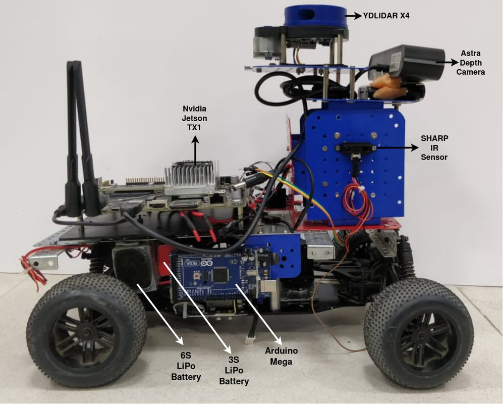
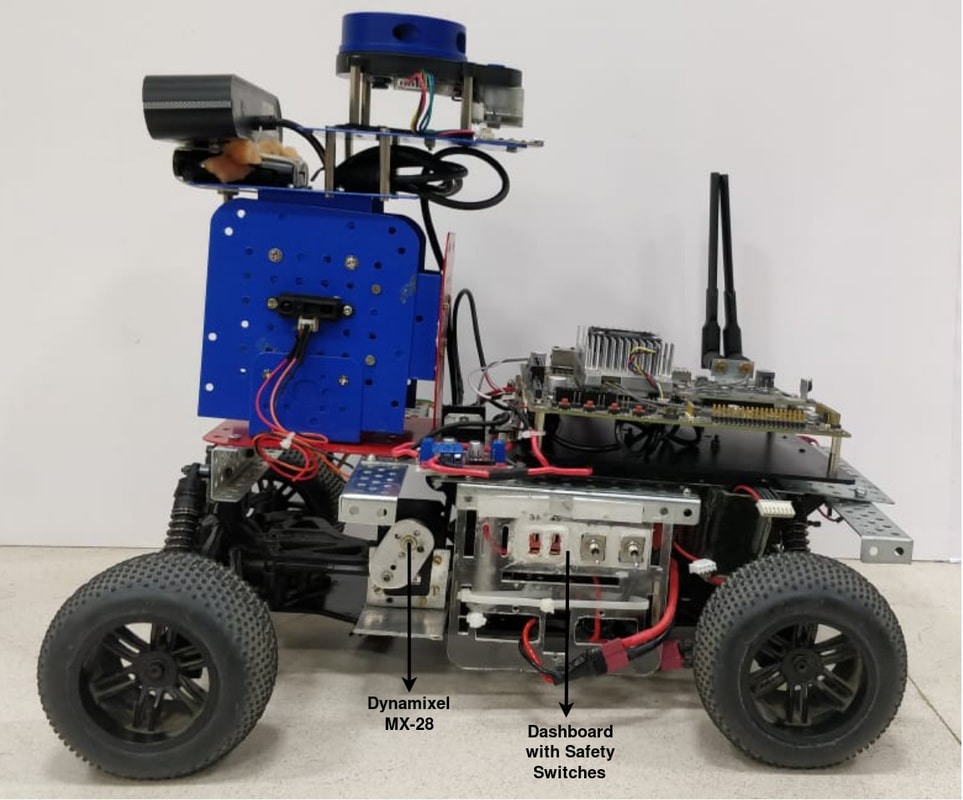

Multi Storey Surveillance
Multi Storey Surveillance
Overview
This is the first version of IvLabs' autonomous driving platform. Built using the chassis of a racing grade 1/10th RC car, it can be used in outdoor road environments. It has additional sensors and components which enable perception, localization, planning and control for autonomous driving applications. The ongoing project for which this platform has been developed is 'Autonomous Delivery Robot', which aims to accomplish A to B navigation with obstacle avoidance within our institute campus.
Mechanical Aspects
- The robot is based on a 1/10th scale RC car generally used in racing competitions.
- It has hydraulic suspensions to make the motion smoother. It also has custom-built mounts and support structures for all sensors and controllers.
- The dimensions are 40 cm x 33.5 cm x 32.5 cm and the total weight (including all components) is 5 kg.
Electric Drive and Steering
- While the robot originally used a miniature IC engine, it has been replaced by a Johnson DC motor as the main driver. The motor is connected to a transmission system which makes the robot 4WD (4 Wheel Drive). It is powered through a L298N motor driver.
- The Ackermann steering is driven by a Dynamixel MX-28 servo motor.
- Both motors are driven by a 6S LiPo battery (22.2 V, 4500 mAh).
Sensors and Controllers
- Orbecc Astra Depth Camera - RGBD camera mounted to get front view image and front 3D depth map for perception and planning. It has a range of 8 meters for the 3D depth map. Useful for localization (using visual odometry) and for identifying obstacles.
- YDLIDAR X4 - Laser range finder which gives a 2D (planar) 360 degrees depth map, used for perception and planning. It has a 10 meters scanning range. Useful for localization of robot and identifying obstacles.
- SparkFun IMU Breakout MPU9250 - An inertial measurement unit (IMU). It consists of a 3-axis accelerometer, 3-axis gyroscope, and a 3-axis magnetometer. Useful for localization of robot.
- SHARP IR Sensor - A distance measuring sensor, to be used as the last line of defense against collisions. It has a range of 4-30 cm.
- Neo-M8N GPS Module - Gives global position (latitude, longitude and altitude) useful for global planning.

- Arduino Mega - Used for lower-level control. It controls both the motors (main drive and steering), and handles all the sensors. It communicates with the main processor (Nvidia Jetson TX1) through rosserial to get commands for the motors and to publish sensor data.
- Nvidia Jetson TX1 - Used for higher-level control. ROS is used for communication between the various modules. It's Nvidia Maxwell GPU (256 CUDA cores) enables fast inference times for deep neural networks. It runs all other processes like the global planning algorithm, the local planning algorithm, control algorithm, and so on.
- All the sensors and controllers are powered by a 3S LiPo battery (11.1 V, 2200 mAh).
